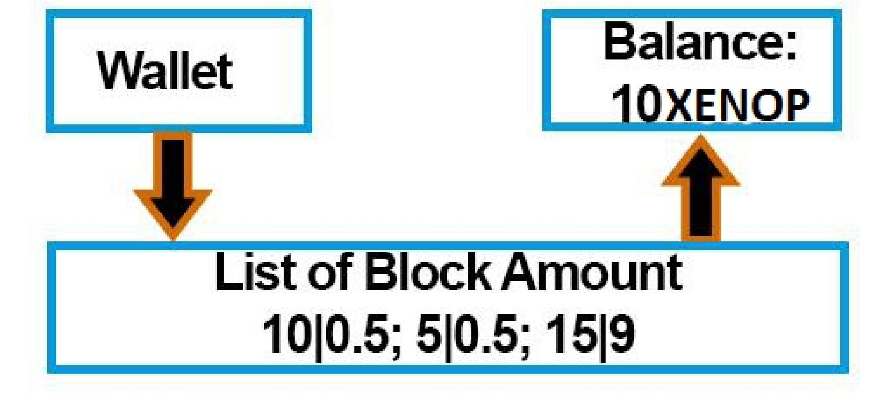
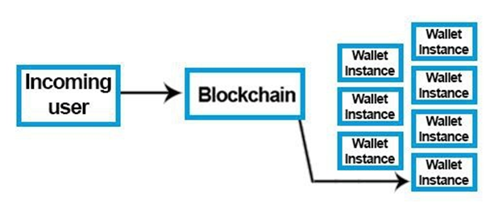
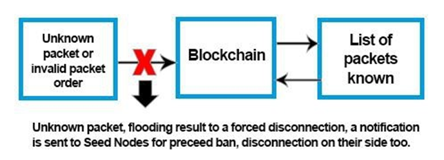
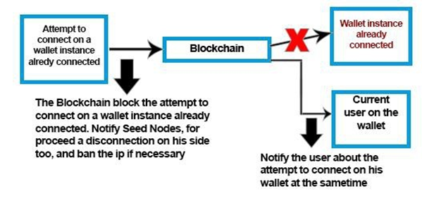
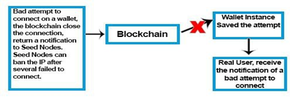
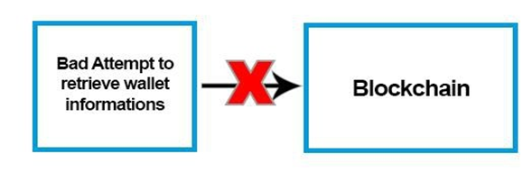
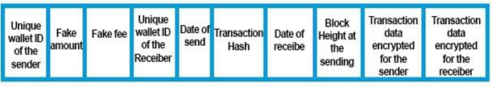
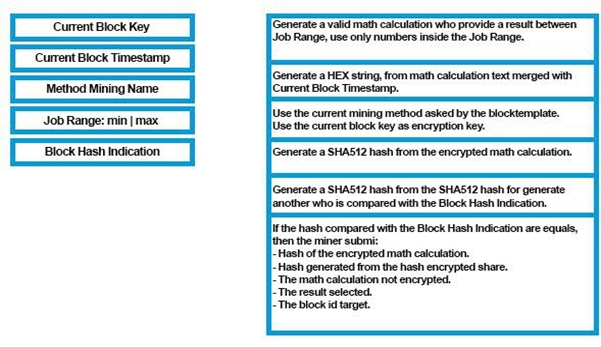

The Xenophyte (XENOP)
A fast, lightweight and portable Central Cryptocurrency
Sam Segura
France
Written: 18/03/2019
Updated: 05/01/2022
Version: 1.4
The Whitepaper can be modified during the Xenophyte test phase and can also be modified after the last phase if a significant update is implemented in its operating protocol.
Summary
Xenophyte is a centralized cryptocurrency.
Payments are processed and verified on a single central point.
Xenophyte is fully developed under the C# programming language, created and developed by Microsoft. Xenophyte tools are not limited to Windows systems and they can be ported to other systems such as Linux, Android and others by external and valid technologies such as Xamarin and Mono Several points provide access to the network of the centralized Blockchain. aims to provethat mining can be protected in real time against ASIC's without going through a Soft/Hard Forkand without the need to submit any significant updates to users or to important network points of the cryptocurrency, such as Seed Nodes and Remote Nodes to keep them compatible with the network.
The purpose is also to propose the possibility that the transactions sent can be received in a fast wayby being only linked to the natural activity of the users on the sending of the transactions and not with the mining operation.
Also that it is possible to link each amount contained in a total wallet balance to an identification number of the mining block to ensure that the amount does exist and is not duplicated..
One of the main functions is also to give the total user balance linked to a bulk mining amount list without the need to synchronize all data of the Blockchain, while putting in provision the history tothe users, while encrypting the transactions carried out so that it is only read by the users concerned with a specific transaction.
It is nevertheless possible to carry out a Fork (copy) of the Blockchain without obtaining the source code of it despite being centralized thanks to the complete history of the blocks and transactions done without discovering the total amount in the wallet of a user. The user must provide their wallet address and his public key so the system can decrypt the related transactions to obtain the users balance, ie you can theoretically get the total amount of money operated by the mining without getting the balance of your users if you try to make a copy of the Blockchain.
The user must provide their wallet address and his public key so the system can decrypt the related transactions to obtain the users balance, ie you can theoretically get the total amount of money operated by the mining without getting the balance of your users if you
try to make a copy of the Blockchain.So you can start from the point of your copy and welcome new users without penalizing the existingusers who will be able to obtain their transaction amounts thanks to their wallet address and public key if that is their wish and that your copy is well and truly consistent with all data.
try to make a copy of the Blockchain.So you can start from the point of your copy and welcome new users without penalizing the existingusers who will be able to obtain their transaction amounts thanks to their wallet address and public key if that is their wish and that your copy is well and truly consistent with all data. Check out the features of Xenophyte and to finish the details of these features below:
I. Characteristics of the Blockchain and its network.
1. The Blockchain calculates the total balance of the user by a list of blocks in contrast to a single amount that could easily be falsified or compromised by a bug.It links each amount that makes up a wallet balance to an ID of a block obtained during a mining operation, which allows to cut the amount of this block and send a part of it while keeping his ID. This also allows to get no block amount greater than the reward of it when mining the one.Each block amount must correspond to the total amount of the reward of the latter when it is recomposed in one during the verification of the amounts.

2. The Blockchain creates an instance for each existing wallet so that it can be processed in real time and connected more easily to make a transaction. However, the user will have to use his PIN code to unlock his instance to which he is connected.

3. The Blockchain only processes static packet commands, ie any type of received packet that is not supported is not allowed as valid and causes an intended disconnection of the one sending it and also the possibility of being banned through Seed Nodes. This is also valid if the sent packets are not sent in the order of the static procedures..

4. The Blockchain only allows one active connection per wallet and has the possibility to inform the user when a connection attempt is made during the users login, even if the attempt is not fully valid. In fact the mere sending a specific connection attempt on a walletaddress automatically causes a notification to be sent to the active connection.

5. The Blockchain also tracks any invalid login attempts of a valid wallet address and informs the owner of invalid attempts when he connects to his wallet with valid credentials.

6. The Blockchain does not provide the ability to retrieve the information from a wallet from the user without providing the private key associated with it. It also has the right to notify the Seed Nodes in case of repeated invalid attempts to cause a temporary ban on the IP address related to the user who tries to make a Bruteforce on it. On the other hand the size of a public/private keys have different sizes and are unique, to further enhance security of the system.
– Minimum number of characters of a public/private key: 128
– Maximum number of characters of a public/private key: 288
– Minimum number of characters of a wallet address: 48
– Maximum number of characters of a wallet address: 96
– Number of possible minimum combinations of characters on different public/private keys: 62 ^ 128
– Number of possible maximum character combinations on different public/private keys: 62 ^288
– Number of possible minimum combinations of characters on wallet addresses: 62 ^ 48
– Number of possible maximum character combinations on wallet addresses: 62 ^ 96
(This limitation can be changed in real time if necessary)

In case of problems, the user with his private key can regenerate new information,he will get a new PIN code and a new private key. Since the version 1.1 of the restore system of Xenophyte, the security has been increased against local network sniffing techniques:
On the Wallet user side:
a. Generate a QR Code representing the private key of the wallet and his new wallet password for his instance on the blockchain.
b. Convert the QR Code picture into Base64String and encrypt this one with AES256bit with his current private key.
c. Send the QR Code encrypted with his wallet unique id (identification number) or a small part of the end of the private key (for old private key's version).
On the Blockchain side:
a. Research the key from the wallet unique id or from the small part of the private key received andtry to decrypt the QR Code encrypted..
b. Convert the QR Code encrypted into a Bitmap and compare the representation with actualinformations of the wallet
c. Generate a new private key and pin code, encrypt every new informations with AES 256bit encryption with the previous private key of the user.
7. The Blockchain that communicates with the user of a wallet encrypts the packets via the information that only the user has as a single encryption key but also with a system for modifying the content of the key in real time with the user.The information that composes the encrypting key is known to the user in advance so that it is not exchanged again. The composition of this encryption key is slightly modified over an irregular interval of timein order to enhance the security and to modify the general appearance of the network packets between the Blockchain and the user
8. The Blockchain performs by security when the user sends a transaction, blocking any other attempts to send a transaction until the pending transaction is listed. This prevents for example the user from sending by mistake multiple times the same transaction.
9. The Blockchain calculates the reception time of a transaction sent in relation to the global activity of pending transactions, this system makes it possible not to overload the Blockchain but also to give a real time estimation of the reception time of the transaction before it is sent. This system applies to all types of transactions, whether from a mining block reward, a synchronization reward given to Remote Node hosts, a regular transaction, or an anonymous transaction.
10. The Blockchain gives the possibility of hiding its wallet address to the person who receives a transaction through an option available on the official Xenophyte wallet software. This option includes a fixed fee transaction of 0.00001000 XENOP per transaction, this fee is then sent to an wallet address of an Xenophyte developer or official tester who is randomly selected from the Blockchain side.
11. The Blockchain imposes a mandatory transaction fee of a minimum amount of 0.00001000 XENOP, this transaction amount influences the time to receive the transaction. The minimum time to receive a transaction will be one second. This amount is then listed for inclusion in the total fee balance accumulated by the Blockchain. This balance is used for pay remote node hosts and make new blocks to mine once the max supply is reached
12. The Blockchain imposes a mandatory Dev Fee of 5% on each blocks mined. This amount of coins is stored for our Development Funds for list easier our coin on exchanges.
13. The Blockchain only provides useful content on transactions and blocks to be synchronizedso that they are fast to obtain and lightweight with virtually constant sizes of about 0.4KB per transactions, 0.23KB per blocks while encrypting exchanges within the network. The non-encrypted portion of the transactions made available to synchronization have the following items:
i. - Unique identification number of the sender
ii. - False amount sent
iii.- False transaction tax amount.
iv. - Unique identification number of the receiver date of dispatch.
v. - Transaction hash.
vi. - Date of receipt.
vii.- Block height when sending the transaction
This allows Seed Nodes and Remote Nodes to sort transactions against the unique identification numbers of users of a wallet, so users will only have to synchronize the data that is for their wallet. This unique identification number between each wallet is obtained only through the connection between the user of a wallet and the Blockchain.
The identification number used by transactions using the anonymity option is different from the one used for basic transactions, so as to make no link between the transactions sent, in order to hide his wallet address to the one who receives the transaction and the basic one.

14. The Blockchain has a system of automatic data copying within its own server and also a mirror system arranged on several external servers that allows redundancy of the data in realtime to secure the Blockchain in case of problem.
15. The Blockchain has an inflation system that increases the max supply every day. Inflation increases the maximum between +0.1 XENOP to +0.5 XENOP maximum. The inflation system is linked to trading activities. For example, if current day activity is higher than the previous day there will be inflation close to +0.1 XENOP, if the trading activity is lower then the inflation will be closer to +0.5 XENOP.
16. The Blockchain issues the current Blocktemplate and the latest mining encryption method in realtime to miners, allowing Xenophyte to be updated in real time to block mining from ASIC’s.
It is theoretically assumed that by changing the number of encryption loops, the encryption key and the required encryption size, this method will effectively block ASIC mining.
Algorithms of encryption used by Xenophyte are: AES and XOR.
It is also accepted that all mining programs put online have a function to request the latest mining method in real time as well as the current Blocktemplate to stay up to date without making a full program update.
The life of a block is dynamic and is based on 60 seconds. It increases according to the difficulty. The higher the difficulty of mining, the higher the lifetime of the current block. If the life is reached, the current block will be renewed and difficulty is decreassed. Even though the same block is being mined, as if it’s a new block, the difficulty is decreased. This process continues till the solution for the block is found.

17. Seed Nodes serve as a secure access point and proxy and are the only tools allowed to reach the Blockchain program network. with a Seed Nodes IP address list pre-registered in advance in the program of the Blockchain and also on his firewall.
18. Seed Nodes serve as data cache for the blocks obtained in the mining operation and the transactions made by the users by distributing them in the same way as the Blockchain to theusers. Remote Nodes also serve as an access point to this data and can be hosted by external users.
19. Seed Nodes do not have the ability to read the exchanges between the users who use a wallet and the Blockchain. The data exchanges are encrypted in advance with the data created during the creation of the wallet and are supplied to the user only once and are no longer sent by the Blockchain or by the user.
20. Seed Nodes do not have any rights on the Blockchain. They only have the ability to pass encrypted data between the users and the Blockchain.
They can, however, serve as a firewall for the Blockchain.
The Blockchain communicates certain received packet errors to Seed Nodes in order to disconnect or ban IP addresses if necessary.
21. Seed Nodes publicly list Remote Nodes hosted and managed by third-party users
if they arealways synchronized identical to the Seed Nodes. Seed nodes have the
ability to check Remote Nodes to determine the integrity of the Remote Node.
In order for the Seed Nodes to be able to check the hosts of Remote Nodes who wish
to be listed, the Remote Node host MUST configure their system to be visible on the
network having appropriate ports open and routed to the public internet.
Configuration of a Remote Node to be listed as a public by the Seed Node is the
responsibility of the node operator. It is suggested to open and route ports 18000
18002 to the public IP address of the Remote Node system.
It is also necessary that the response time and the connection of the Remote Node
respond quickly to the Seed Nodes. Remote Node hosts that have limited bandwidth
may be listed, but be banned or unused by the Seed Nodes. A minimum of 10kb/s is
recommended.
This system also makes it possible to reward the hosts of the Remote Nodes which
participates to enlarge the network of emission of the data to be synchronized thanks
to a percentage deducted on the transaction fees collected over 24 hours by
communicating a report of precise time of synchronization between the Seed Nodes
and Remote Nodes at the Blockchain.
22. Remote Nodes allow to redistribute the synchronization data of the Blockchain obtained with Seed Nodes and to distribute them to wallet users without going through the centralized network.
23. Remote Nodes can be listed in a list on Seed Nodes allowing them to be used by the users using a wallet, they must be synchronized in the most precise way compared to the data put on line by Seed Nodes, this functionality permits Remote Nodes to participate in the data distribution of the Blockchain.
24. Remote Nodes can sort synchronized transactions by unique identification number of the user's wallet address to return the number of transactions held by the user and their data.
II. Token Network of the Blockchain(Beta).
(The Token Network system is on Beta and should receive updates for increase his security)
The Token Network of the Blockchain, is a system who permit to retrieve wallet
informations/submit transactions without to keep a connection opened and online
24h/24 just by HTTP GET request encrypted with a precise schema of request to respect.
The token require to be use before his expiration of 10 seconds and can be use only
one time. Every GET request require to include also the datetime of sent inside the
request encrypted, that's permit to make an expiration date of old encrypted packets
sent.
Algorithm of encryption used: AES 256bit
To use the Token Network, the user have to repeat everytime the same schema for
retrieve an information or to send a transaction:
1. Required informations to retrieve a new valid token:
- On the encryption key: → Wallet Address + Wallet Public Key + Current Wallet
Password - On the request encrypted: → ask-token|empty|date of packet. Request sent: →
TOKEN-NETWORK|wallet address|encrypted request Request received (For
example):
{"result":"
4egdSyb464Az1jly8Z9ts8xHbWCL7e9ViyEA3JjIajwu3sRdFdRvVRK
m4wms5DJm
","version": "2.0.0.1" }
The decryption key of the result received encapsulated inside a json string: Wallet
Address + Walet Public Key + Current Wallet Password
2. Required informations to use a valid token:
- The encryption key of the request:
→ Wallet Address + Wallet Public Key + Current Wallet Password - On
the request encrypted:
→ ask-wallet-balance|token-received|date of packet. (For example) -
Request sent:
→ TOKEN-NETWORK|wallet address|encrypted request
- Request received (For example):
{"result":"
gFsal9bHEIUJC3aXlovMRSatUnxxc5cnbaTQYPC+
+Xs=
","version": "2.0.0.1"}
- The decryption key of the result received encapsulated inside a json string:
→ Wallet Address + Walet Public Key + Current Wallet Password + previous
token used
3. Available request who can be submit to the Token Network:
TOKEN-ASK: Ask a new token.
TOKEN-ASK-BALANCE: Ask current balance information of the wallet.
TOKEN-ASK-WALLET-ID: Ask Unique Wallet ID of the wallet.
TOKEN-ASK-WALLET-ANONYMOUS-ID: Ask unique Anonymous
Wallet ID of the wallet.
TOKEN-ASK-WALLET-SEND-TRANSACTION: Ask to send a
transaction.
Every wrong requests received on the Blockchain side, notify Seed Nodes
for proceed banishments, also every wrong requests notify the wallet user.
The Token Network respect the unique connection system of the
Blockchain, that's mean a token request cannot be submitted if the wallet
target is connected and notify the user.
Seed Nodes get also a notification of an «invalid packet» for proceed
banishments.
III. Soft/Hard Fork of the Blockchain.
When a Soft/Hard Fork is set up on the Xenophyte Blockchain, the source code
of the previous version will be published online. The current version implemented
during the Soft/Hard Fork will not put online, for the following reasons:
For security, each Soft/Hard Fork changes security procedures and improves
them so that they are always different from previous versions. To include new
features to keep a distance to the competition.
The Whitepaper may be modified during the Xenophyte test phase and may also
be modified after the test phase if a significant update is implemented on its
operating protocol.
It is nevertheless possible to carry out a fork of the Blockchain with the
synchronization data that can be completely obtained with Seed Nodes and
Remote Nodes.
So you can go back to the point of your copy by knowing how many blocks of
mining have been found and therefore get the total amount in circulation.
Then with the complete history of the transactions, when your Blockchain obtains
the address of wallet and that public key, you can decrypt transactions for this
address to identify the amounts sent and received, and thus recompose the total
balance of users who want to use your Fork.
With this method you can launch your Fork to the public while continuing to
serve new users without penalizing the "old" users who wish to join your copy.
IV. Maintenances on the Blockchain
As mentioned before, Xenophyte is a centralized cryptocurrency, so it is possible
that maintenance is performed and can thus temporarily block access to the
Blockchain.
guarantee the security of the data, several backup systems have been set up,
namely an internal copying of the encrypted data over a regular interval, and a
mirror system making it possible to copy the data of the Blockchain in realtime
set up on several servers.
These maintenances are also intended to improve the Blockchain, and it can that
if necessary a Soft/Hard Fork is set up for this purpose. Moving the Blockchain
to more powerful servers can also happen if necessary.